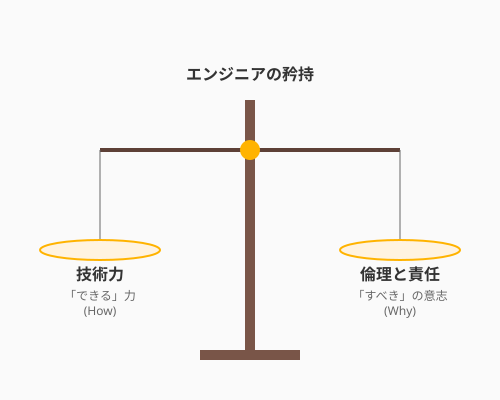

昔話に出てくる魔法の杖は、持ち主の意志次第で、枯れ木に花を咲かせることもあれば、国を滅ぼす災いをもたらすこともあります。
現代において、ソフトウェアエンジニアリングとAIは、まさにその「魔法の杖」です。AIという強力な力を手にした私たちは、かつてないほど速く、かつてないほど大規模なものを創り出すことができます。しかし、だからこそ問われるのが、その杖を振るうあなたの「意志」です。
「このコードは、誰を幸せにするのか？」「このシステムが普及したとき、世界はどう変わるのか？」 技術的な美しさのその先にある「意味」を問うこと。それが、プロのエンジニアに求められる最も重要な資質です。
ACM（計算機学会）やIEEE（電気電子学会）が定めるソフトウェアエンジニアリングの倫理規定には、共通する精神があります。それは、「社会、顧客、雇用主、そして専門職に対する誠実さ」です。
次の図は、エンジニアが技術的判断を行う際に考慮すべき責任の天秤を示しています。

具体的に、私たちは以下の視点を忘れてはなりません。
技術的に「できる」ことと、社会的に「すべき」こと。その境界線を見極める力が、プロフェッショナルとしてのあなたを守ります。
この境界線が実際の開発現場でどのように試されるのか、QuestForgeを例に見てみましょう。あなたはQuestForgeの開発者として、ユーザーの継続率（DAU）を上げたいと考えています。その時、AIからこんな提案があったとしましょう。
「報酬の受け取りに24時間の時間制限をつけ、プッシュ通知を1時間に1回送りましょう。さらに、ガチャの確率を『あと少しで当たりそう』に見せる演出を追加すれば、ユーザーは夢中になりますよ」
これはダークパターンと呼ばれる、ユーザーの心理的な脆弱性を突いた設計です。技術的には簡単で、短期的には数字も上がるでしょう。しかし、これはユーザーの「幸せ」に貢献しているでしょうか？ むしろ、彼らの生活を支配し、疲弊させていないでしょうか？
アルケミストは、人を呪うための魔法を使ってはいけません。 「ユーザーが主体的に楽しみ、成長を感じられる設計になっているか」をつねに自分に問いかけましょう。
この誠実さの精神は個人の設計判断にとどまらず、より広い循環へとつながっています。あなたが今、この本を読み、QuestForgeのようなアプリを作れるのは、かつての偉大なエンジニアたちが築き上げたオープンソースや知識の蓄積があるからです。
エンジニアの創造性は、閉じられたものではありません。
こうした「知の循環」に参加し、未来のエンジニアのために道を整えること。それ自体が、社会に対する誠実さの証となります。
強力な技術を持つ者こそ、「なぜ作るのか」という意志が問われます。技術的に「できる」ことと社会的に「すべき」ことの境界線を見極める力——それがプロフェッショナルとしてのエンジニアを定義します。公平性・アクセシビリティ・プライバシーを設計の初期段階から組み込むことは、後付けの対策よりもはるかに効果的で美しい実践です。
ダークパターンの誘惑に対峙するとき、私たちには「このシステムはユーザーの幸せに貢献しているか」という問いかけが必要です。そして知の循環に参加し、自分が受けた恩恵を未来のエンジニアへと送り出すこと——それは技術的な能力と同じくらい価値ある、社会に対する誠実さの証となります。
8.2節では、AI時代における創造性という豊かなテーマへと進みます。AIと人間の協働が生み出す新しい創造の形、そしてその中でエンジニアの「ユニークな価値」がどこにあるのかを探りましょう。
私は新しいWebサービスを企画しています。
[サービスの概要を記述]
このサービスが社会に普及した際、発生しうる「倫理的な懸念点」や「無意識のバイアス」を
5つの異なる視点（ユーザー、非ユーザー、将来世代、マイノリティ、環境など）から分析してください。以下のユーザーストーリーに対して、
「アクセシビリティ（アクセスのしやすさ）」の観点から
追加すべき受け入れ基準を提案してください。
[ユーザーストーリーを記述]